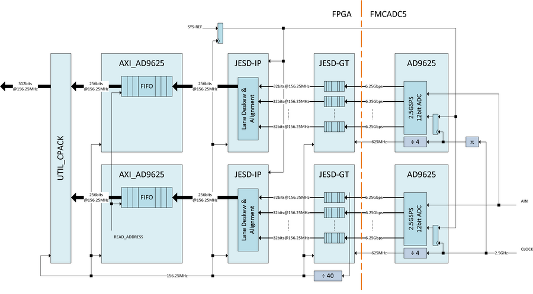

FMCADC5 HDL Project (OBSOLETE)
Warning
The support for FMCADC5 HDL project
has been discontinued, the latest release branch where it can be found is
hdl_2021_r2. This page is left for legacy purposes only.
Overview
The AD-FMCADC5-EBZ is a high-speed single channel data acquisition board featuring two AD9625 ADCs. The board is provisioned to sample the single input at an effective sampling rate of 5GSPS, with both the ADCs running at 2.5GHz and sampling at both edges (the clocks are 180 out of phase to each other).
The AD-FMCADC5-EBZ is a double FMC wide board and requires two fully populated (transceivers mainly) FMC connectors on the carrier (such as VC707).
The board’s primary purpose is to demonstrate the capabilities of the devices on board quickly and easily by providing a seamless interface to an FMC carrier platform and running the reference design on the carrier FPGA. The board is designed to self power and self clock when connected to the FMC carrier. The analog signal is connected to J18.
Supported boards
Supported devices
Supported carriers
VC707 on FMC HPC1 and HPC2
Block design
A brief introduction to interleaving: there are two AD9625 devices running at 2.5Gbps, but the clocks to the devices are 180 degrees out of phase. In other words, the input signal is sampled by the first ADC at the rising edges of the 2.5GHz clock. The same signal is sampled by the second ADC at the falling edges of the “conceptually same” clock. That is an effective sampling rate of 5GSPS. All the user needs to do is interleave these two samples.
A word of caution (or disclaimer), this interleaving inherently has some performance factors outside of what we are discussing here. There are two major factors, first the jitter on the sampling clocks. Second, the gain and phase variations at the input. The devices itself may also have encoding skew. Some of these may be filtered or compensated by post processing the samples.
If we look at the data path of the devices independently (see block diagram above), we can see that alignment and deskew happens at various stages. The transceivers perform deskew and alignment of bits (comma character alignment and 10B to 8B conversion), the JESD-IP then aligns individual lanes and outputs data with a fixed latency using SYSREF. The SYSREF resets the LMFC, thus the receiver knows from the time it receives the SYSREF pulse to the first received ILA data the latency of the system. After this the samples hit the AD9625 core.
The cores receive two samples from each of the devices. Now it needs to know which samples goes first (in time) and which one follows it. That is, the samples are to be interleaved in the same order they were sampled in absolute time. Ideally being a JESD204B subclass-1 devices using SYSREF should have been sufficient to do this. The SYSREF is the “absolute” reference for all the concerned transmit and receive devices.
However, for practical reasons, SYSREF is seldom used as a clock but as data and is sampled by the concerned parties at their own clock. A robust method is to identify, at the receiving device, the exact sample at which (or immediately after) the device sampled SYSREF. So the AD9625 supports a mode in which a time stamp is attached to the samples. The details of which are in the data sheet. The FPGA design simply uses this time stamp and knows the exact sample at which the devices sampled SYSREF. The design implements this by aligning samples across the 16-sample data per device per clock.
After which, data is written to a small FIFO with the write pointer reset by the SYSREF time stamp. A common read pointer is then used to read the samples. The FIFO supports deskewing of up to 8 samples. The ADC pack simply interleaves these samples assuming device-0 is first in order. The software needs to make sure that device-0 always samples SYSREF half a clock ahead of device-1. This is done with a calibration routine.
The AD9625 supports time stamp insertion at the LSB of the sample (and is the ONLY option in certain lane configurations). This changes the devices to 11-bit converters. The HDL design does NOT support this. It supports time stamp insertion in the CS bits ONLY. The converter resolution remains as 12-bit. If you would prefer the LSB option, you need to change both HDL and software.
Block diagram
The data path and clock domains are depicted in the below diagram:
{kind=link}
Clock configuration
The AD-FMCADC5-EBZ uses a 2.5GHz crystal. The two AD9625 devices are clocked from the same clock source, but 180 degrees out of phase.
CPU/Memory interconnects addresses
The addresses are dependent on the architecture of the FPGA, having an offset added to the base address from HDL (see more at CPU/Memory interconnects addresses).
Instance |
Zynq/Microblaze |
|---|---|
axi_ad9625_0_xcvr |
0x44A6_0000 |
axi_ad9625_1_xcvr |
0x44B6_0000 |
axi_ad9625_0_core |
0x44A1_0000 |
axi_ad9625_1_core |
0x44B1_0000 |
axi_ad9625_0_jesd |
0x44A9_0000 |
axi_ad9625_1_jesd |
0x44B9_0000 |
axi_ad9625_dma |
0x7C42_0000 |
SPI connections
SPI type |
SPI manager instance |
SPI subordinate |
CS |
|---|---|---|---|
PS |
SPI 0 |
AD9625 |
0 |
PS |
SPI 1 |
ADF4355 |
0 |
GPIOs
GPIO signal |
Direction |
HDL GPIO EMIO |
Software GPIO |
Software GPIO |
|---|---|---|---|---|
(from FPGA view) |
Zynq-7000 |
Zynq MP |
||
pwr_good |
INOUT |
44 |
98 |
122 |
fd_1 |
INOUT |
43 |
97 |
121 |
irq_1 |
INOUT |
42 |
96 |
120 |
fd_0 |
INOUT |
41 |
95 |
119 |
irq_0 |
INOUT |
40 |
94 |
118 |
pwdn_1 |
INOUT |
39 |
93 |
117 |
rst_1 |
INOUT |
38 |
92 |
116 |
pwdn_0 |
INOUT |
35 |
89 |
113 |
rst_0 |
INOUT |
34 |
88 |
112 |
Interrupts
Below are the Programmable Logic interrupts used in this project.
Instance name |
HDL |
Linux Zynq |
Actual Zynq |
Linux ZynqMP |
Actual ZynqMP |
|---|---|---|---|---|---|
axi_ad9625_1_jesd |
14 |
58 |
90 |
110 |
142 |
axi_ad9625_0_jesd |
13 |
57 |
89 |
100 |
141 |
axi_ad9625_dma |
12 |
56 |
88 |
108 |
140 |
Building the HDL project
The design is built upon ADI’s generic HDL reference design framework. ADI distributed the bit/elf files of this project as part of the ADI Kuiper Linux until the 2021_R2 release. The prebuilt files can be found in the previous link. Afterwards, it was discontinued.
But, if you want to build the sources, ADI makes them available on the
HDL repository. To get the source you must
clone
the HDL repository and checkout the last release branch where this project
still exists, hdl_2021_r2.
Then go to the hdl/projects/fmcadc5/vc707 location and run the make command.
Linux/Cygwin/WSL
/hdl$
git checkout hdl_2021_r2
/hdl$
cd projects/fmcadc5/vc707
/hdl/projects/fmcadc5/vc707$
make
Resources
More information
Support
Analog Devices, Inc. will provide limited online support for anyone using the reference design with ADI components via the EngineerZone FPGA reference designs forum.
For questions regarding the ADI Linux device drivers, device trees, etc. from our Linux GitHub repository, the team will offer support on the EngineerZone Linux software drivers forum.
For questions concerning the ADI No-OS drivers, from our No-OS GitHub repository, the team will offer support on the EngineerZone microcontroller No-OS drivers forum.
It should be noted, that the older the tools’ versions and release branches are, the lower the chances to receive support from ADI engineers.